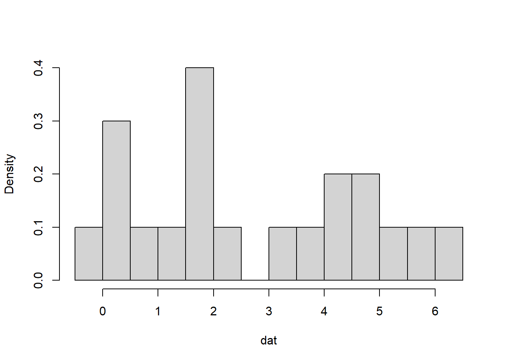
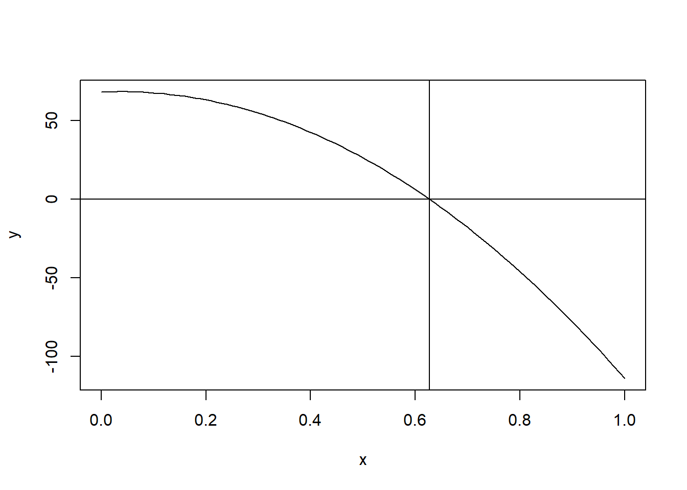
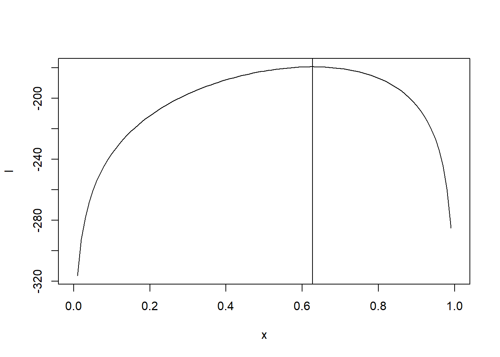

EM 알고리즘 설명
EM 알고리즘 정의
EM algorithm for Two component Gaussian Mixture
### motivation
dat <- c(-0.39, 0.12, 0.94, 1.67, 1.76, 2.44, 3.72, 4.28, 4.92, 5.53,
0.06, 0.48, 1.01, 1.68, 1.80, 3.25, 4.12, 4.60, 5.28, 6.22)
hist(dat, probability = T, breaks = seq(-0.5, 6.5, length.out = 15), main = '')
n = 20 데이터는 bimodal 형태를 띄고 있다. 이 데이터는 어떤 분포로부터 나왔는가?
우리가 아는 대부분의 분포는 unimodal(단봉) 형태로 bimodal(쌍봉) 형태에 대해서는 잘 모른다. 따라서 추론을 해야하는데 가장 쉽게 생각할 수 있는 것은 두개의 정규분포를 혼합한 형태로 생각하는 것이다. 이러한 분포를 mixture distribution이라고 한다. bimodal(쌍봉) 형태의 분포는 두 개의 정규분포를 결합한 mixture distribution이라는 가설을 세웠으므로 문제를 풀기 위해서는 분포의 형태를 결정하는 모수를 알아야 한다. 즉, 정규 분포에 대한 모수 \(\mu_1, \mu_2, \sigma_1^2, \sigma_2^2\)를 알아야 한다. 추가적으로 두 분포 중에 데이터가 어느 분포에서 나왔는지를 수량화하는 모수 \(P(Z = 1) = \pi\)를 추가한다. 따라서 가설을 풀기 위해서는 \(\mu_1, \mu_2, \sigma_1^2, \sigma_2^2, \pi\) 총 5개의 모수를 추정해야 한다. 만약에 \(P(Z = 1) = \pi\)를 알고 있으면 나머지 4개의 모수는 두 분포가 독립이므로 MLE를 통해서 구할 수 있다. 하지만 \(Z\)는 가상적으로 만든 random variable이므로 \(\pi\)를 알 수 없다. 따라서 \(\pi\)를 구하기 위해서 iteration을 수렴할 때까지 해서 \(\pi\)를 추정한다.
\(data = (0.39, 0.12, 0.94, 1.67, 1.76, 2.44, 3.72, 4.28, 4.92, 5.53,0.06, 0.48, 1.01, 1.68, 1.80, 3.25, 4.12, 4.60, 5.28, 6.22)\)
- \(Y_1 \sim N(\mu_1, \sigma_1^2)\)
- \(Y_2 \sim N(\mu_2, \sigma_2^2)\)
- \(Y = (1-Z)Y_1 + ZY_2\)
- \(P(Z = 1) = \pi\), \(Z = 0\) if \(\mu_2, \sigma_2^2\)을 모수로 갖는 정규분포일 경우
- \(\hat{\mu_1},\hat{\mu_2},\hat{\sigma_1}^2, \hat{\sigma_2}^2, \hat{\pi}\) 에 대한 초기값을 설정한다.
y <- c(-0.39, 0.06, 0.12, 0.48, 0.94, 1.01, 1.67, 1.68, 1.76, 1.80, 2.44, 3.25, 3.72, 4.12, 4.28, 4.60, 4.92, 5.28, 5.53, 6.22 )
n <- length(y)
y1 <- c(-0.39, 0.06, 0.12, 0.48, 0.94, 1.01, 1.67, 1.68, 1.76, 1.80, 2.44)
y2 <- c(3.25, 3.72, 4.12, 4.28, 4.60, 4.92, 5.28, 5.53, 6.22)
mu1 <- mean(y1)
mu2 <- mean(y2)
s1 <- var(y1)
s2 <- var(y2)
phat <- 0.5- E-step
\[\hat {\gamma}_i = \frac{\hat{\pi}\phi_{\hat{\theta}_2}(y_i)}{(1-\hat{\pi}) \phi_{\hat{\theta}_1}(y_i)+\hat{\pi}\phi_{\hat{\theta}_2}(y_i)}\] \(i = 1,2,....,n\)
res <- vector()
for (i in 1:n) {
a <- phat*dnorm(y[i], mean = mu2, sd = s2)
b <- (1-phat)*dnorm(y[i], mean = mu1, sd = s1)+phat*dnorm(y[i], mean = mu2, sd = s2)
res[i] <- a/(a+b)
}
res## [1] 2.196263e-07 1.663506e-06 2.186560e-06 1.146965e-05 9.945000e-05
## [6] 1.387198e-04 3.356555e-03 3.524375e-03 5.207622e-03 6.329995e-03
## [11] 1.203763e-01 4.772492e-01 4.980510e-01 4.997759e-01 4.999067e-01
## [16] 4.999841e-01 4.999974e-01 4.999997e-01 4.999999e-01 5.000000e-01- M-step
\(\hat{\mu_1}=\frac{\sum_{i=1}^n (1-\hat{\gamma_i})y_i}{\sum_{i=1}^n(1-\hat{\gamma_i})}\),
\(\hat{\mu_2}=\frac{\sum_{i=1}^n \hat{\gamma_i}y_i}{\sum_{i=1}^n \hat{\gamma_i}}\),
\(\hat{\sigma_1}=\frac{\sum_{i=1}^n (1-\hat{\gamma_i})(y_i-\hat{\mu_1}^2)}{\sum_{i=1}^n(1-\hat{\gamma_i})}\),
\(\hat{\sigma_2}=\frac{\sum_{i=1}^n \hat{\gamma_i}(y_i-\hat{\mu_2}^2)}{\sum_{i=1}^n\hat{\gamma_i}}\),
mu1 <- sum((1-res)*y)/sum(1-res)
mu2 <- sum(res*y)/sum(res)
s1 <- sqrt(sum((1-res)*(y-mu1)^2)/sum(1-res))
s2 <- sqrt(sum(res*(y-mu2)^2)/sum(res))
phat <- mean(res)- E-M step 반복
y <- c(-0.39, 0.06, 0.12, 0.48, 0.94, 1.01, 1.67, 1.68, 1.76, 1.80, 2.44, 3.25, 3.72, 4.12, 4.28, 4.60, 4.92, 5.28, 5.53, 6.22 )
n <- length(y)
N <- 100
y1 <- c(-0.39, 0.06, 0.12, 0.48, 0.94, 1.01, 1.67, 1.68, 1.76, 1.80, 2.44)
y2 <- c(3.25, 3.72, 4.12, 4.28, 4.60, 4.92, 5.28, 5.53, 6.22)
mu1 <- mean(y1)
mu2 <- mean(y2)
s1 <- var(y1)
s2 <- var(y2)
phat <- 0.5
result <- vector()
for (j in 1:N) {
# E-step
res <- phat*dnorm(y, mean = mu2, sd = s2)/((1-phat)*dnorm(y, mean = mu1, sd = s1)+phat*dnorm(y, mean = mu2, sd = s2))
# M-step
mu1 <- sum((1-res)*y)/sum(1-res)
mu2 <- sum(res*y)/sum(res)
s1 <- sqrt(sum((1-res)*(y-mu1)^2)/sum(1-res))
s2 <- sqrt(sum(res*(y-mu2)^2)/sum(res))
phat <- mean(res)
# result
result[j] <- sum(log((1-phat)*dnorm(y, mu1, s1) + phat*dnorm(y, mu2, s2)))
if(j>1){
if(result[j]-result[j-1]<1e-8){
result <- result[1:j]
break
}
}
j <- j+1
}
mu1## [1] 1.083143mu2## [1] 4.655892s1## [1] 0.9007445s2## [1] 0.9048893Two component Gaussian Mixture 더 간단한 예시
일반적으로 흐린 날에는 맑은 날보다 온도가 낮다. 10일 동안의 온도 데이터가 주어졌을 때 맑은 날과 흐린 날의 평균 온도는 얼마인가? (10일 동안의 온도는 주어졌지만 흐린 날의 온도인지 맑은 날의 온도인지 모른다)
k = 2, 각 k별로 정규분포 가정(\(\sigma_0 = 10\)), 즉 bimodal distribution 형태가 됨.
주어진 데이터와 parameter는 다음과 같다.
\(temerature = (70, 62, 89, 54, 97, 75, 82, 56, 32, 78)\)
- \(k = 2\)
- \(\mu_1 = 80\) initial value
- \(\mu_2 = 55\) initial value
- \(Z_{ij} = 1\), x가 첫번째 정규분포에서 발생했을 경우
- \(Z_{ij} = 0\), x가 두번째 정규분포에서 발생했을 경우
- \(X_i\) : observed
- \(Z_{ij}\) : unobservable
temp <- c(70, 62, 89, 54, 97, 75, 82, 56, 32, 78)
n <- length(temp)
mu1 <- 80 # initial value
mu2 <- 55 # initial value E- STEP
\[E[Z_{ij}] = \frac{P(X=x_i|\mu = \mu_j)}{\sum_{k=1}^2 P(X=x_i|\mu = \mu_k)} = \frac{\exp(-\frac{1}{2\sigma^2}(x_i-\mu_j)^2)}{\sum_{k=1}^2\exp(-\frac{1}{2\sigma^2}(x_i-\mu_k)^2)}\]
\[E[Z_{11}] = \frac{exp(-\frac{1}{2\times 100} (70-80)^2)}{exp(-\frac{1}{2\times 100} (70-80)^2)+exp(-\frac{1}{2\times 100} (70-55)^2)} = 0.65\]
\[E[Z_{12}] = \frac{exp(-\frac{1}{2\times 100} (70-55)^2)}{exp(-\frac{1}{2\times 100} (70-80)^2)+exp(-\frac{1}{2\times 100} (70-55)^2)} = 0.34\]
\(E[Z_{i1}] = (0.65, 0.20, 0.99, 0.03, 0.99, 0.86, 0.97, 0.053, 0.00, 0.93)\)
\(E[Z_{i2}] = (0.34, 0.79, 0.00, 0.96, 0.00, 0.13, 0.02, 0.94, 0.99, 0.067)\)
EZ1 <- vector()
EZ2 <- vector()
for (i in 1:n) {
L1 <- dnorm(x = temp[i], mean = mu1, sd = 10)
L2 <- dnorm(x = temp[i], mean = mu2, sd = 10)
EZ1[i] <- L1/(L1+L2)
EZ2[i] <- L2/(L1+L2)
}
EZ1## [1] 0.6513548647 0.2018132223 0.9953904278 0.0330859784 0.9993736658
## [6] 0.8670357598 0.9740426428 0.0534033298 0.0001398221 0.9324533089EZ2## [1] 0.3486451353 0.7981867777 0.0046095722 0.9669140216 0.0006263342
## [6] 0.1329642402 0.0259573572 0.9465966702 0.9998601779 0.0675466911M - STEP
\[\mu_j \longleftarrow \frac{\sum_{i=1}^m E[Z_{ij}]X_i}{\sum_{i=1}^m E[Z_{ij}]}\]
\[\mu_1 \longleftarrow \frac{0.65\times 70+0.20\times62+0.99\times89+....+0.93\times78}{0.65+0.20+0.99+....+0.93}=81.75\] \[\mu_2 \longleftarrow \frac{0.34\times 70+0.79\times62+....+0.067\times78}{0.34+0.79+0.00+....+0.067}=53.35\]
numerator1 <- vector()
numerator2 <- vector()
for (i in 1:n) {
numerator1[i] <- temp[i]*EZ1[i]
numerator2[i] <- temp[i]*EZ2[i]
}
sum(numerator1)/sum(EZ1) # update value ## [1] 81.64697sum(numerator2)/sum(EZ2) # update value ## [1] 53.34494수렴할 때까지 E - step, M - step 반복
iteration E-M step
temp <- c(70, 62, 89, 54, 97, 75, 82, 56, 32, 78)
mu <- c(80, 55) # initial value
mu.old <- mu+1
tol <- .Machine$double.eps^0.5
n <- length(temp)
j <- 0
EZ1 <- vector()
EZ2 <- vector()
numerator1 <- vector()
numerator2 <- vector()
while(TRUE){
for (i in 1:n) {
L1 <- dnorm(x = temp[i], mean = mu[1], sd = 10)
L2 <- dnorm(x = temp[i], mean = mu[2], sd = 10)
EZ1[i] <- L1/(L1+L2)
EZ2[i] <- L2/(L1+L2)
numerator1[i] <- temp[i]*EZ1[i]
numerator2[i] <- temp[i]*EZ2[i]
}
a <- sum(numerator1)/sum(EZ1) # update value
b <- sum(numerator2)/sum(EZ2) # update value
mu <- c(a, b)
j <- j+1
if(sum(abs(mu-mu.old)/mu.old)<tol | j > 1000){
break
}
}
mu## [1] 81.73553 52.83098multinomial example
y1 <- 38
y2 <- 34
y3 <- 125
x <- seq(0,1,0.01)
# MLE
y <- (-y1-y2-y3)*x^2 + (-2*y1-y2+y3)*x+2*y2
plot(x, y, type = 'l')
abline(h=0,
v = uniroot(function(x) (-y1-y2-y3)*x^2 + (-2*y1-y2+y3)*x+
2*y2, c(0,1))[[1]])
# log likelihood
l <- y1*log(1/2-x/2)+y2*log(x/4)+y3*log(1/2+x/4)
plot(x, l, type = 'l')
abline(v = uniroot(function(x) (-y1-y2-y3)*x^2 + (-2*y1-y2+y3)*x+
2*y2, c(0,1))[[1]])
# use EM algorithm
t1 <- 0.2
for (i in 1:10) {
y3.tmp <- 125*(t1/4)/(1/2+t1/4)
t2 <- (34+y3.tmp)/(72+y3.tmp)
t1 <- t2
}
t2## [1] 0.6268215